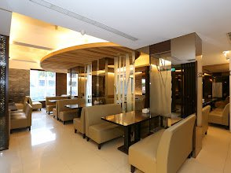
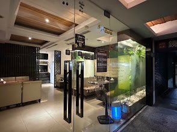

憑學生證享主餐全面 9 折加贈特選紅茶
凡輔仁大學及大專院校學生，平日週一至週五憑有效學生證內用任一主餐，即享結帳 9 折優惠，並免費升級招牌飲品！
專為周邊學生聚餐、上班族活力午餐與家庭歡聚打造的複合式茶房。從大份量香酥椒麻雞腿飯、手熬香茅養生鍋到現點現搾翡翠檸檬綠茶，以嚴選食材與平實價格，溫暖陪伴您的日常食光。


「檸檬草美食茶房」發跡於新莊輔大商圈（242 新北市新莊區福營里中正路 571 號），秉持著「自然・溫暖・清新・舒適」的核心初心。我們深信，好的餐飲不僅是填飽肚子，更是一段能夠卸下生活疲憊、與好友侃侃而談的珍貴時光。
廚房裡堅持手作現熬天然高湯、不用化學香料；吧檯前嚴選台灣名間與阿里山高山茶葉，以純糖調配杯杯現點現搖的芳醇茶飲。無論是一個人享受靜謐閱讀，還是十幾位好友的歡樂慶生聚會，檸檬草始終為您留一盞溫暖的燈火。
提供免費 Wi-Fi、充足插座與大桌聚餐空間
餐點均附豐富配菜與熱湯，無額外隱藏服務費
深入分析三大核心族群的用餐情境與痛點，提供最精準周到的服務體驗。
年齡區間：18 – 24 歲（輔大及周邊校園）
核心需求：快速瀏覽菜單、預算價格比較、多人併桌大空間
年齡區間：25 – 35 歲（新莊及周邊商辦園區）
核心需求：快速確認營業時間、出餐效率、健康低負擔
年齡區間：20 – 45 歲（在地家庭、親朋好友）
核心需求：環境寬敞整潔、老少咸宜多元菜系、交通方便
挑高明亮的大片採光、綠意盎然的香草植栽與舒適沙發座位，為您打造沉澱身心的美好時刻。


把握專屬優惠，隨時享受美食與茶香的暖心犒賞！
凡輔仁大學及大專院校學生，平日週一至週五憑有效學生證內用任一主餐，即享結帳 9 折優惠，並免費升級招牌飲品！
採用自種新鮮檸檬香茅與埔里紅棗慢火精燉，點鍋即贈「古早味現炸手作豆腐」一份，暖胃滋補不油膩，每日限量供應。
週一至週五 11:30–14:00 期間，來電外帶自取主廚特餐享 85 折優惠，免久候快速取餐，為下午注入滿滿元氣！
位於新莊輔大商圈核心地段，中正路正熱鬧街區，交通四通八達，無論搭乘捷運、公車或自行開車前往均極為便利。
（位於輔仁大學正門斜對面中正路上，鄰近捷運輔大站 1 號及 2 號出口）
242 新北市新莊區福營里中正路 571 號
搭乘中和新蘆線至【輔大站】1 號或 2 號出口出站，沿中正路直行步行約 2 分鐘即可抵達（242 新北市新莊區福營里中正路 571 號，步行約 150 公尺）。
搭乘 111、235、299、513、635、636、637、802、藍2 等線路公車至「輔仁大學站」下車，過馬路步行 1 分鐘即達門市。
1. 輔仁大學校內訪客收費停車場（平日每小時 $30，步行約 3 分鐘）
2. 中正路周邊公有/私有平面停車場（步行約 2–4 分鐘）
02-2903-5188（內用採現場候位入座；歡迎來電外帶自取點餐）
詳細風味工法與故事介紹...